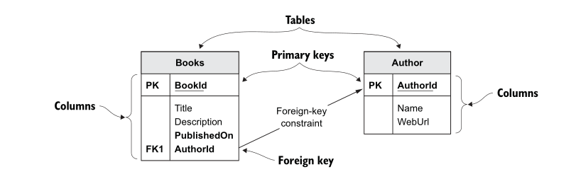
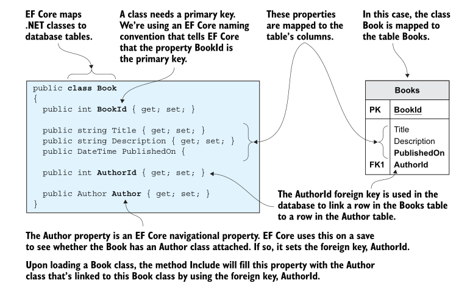
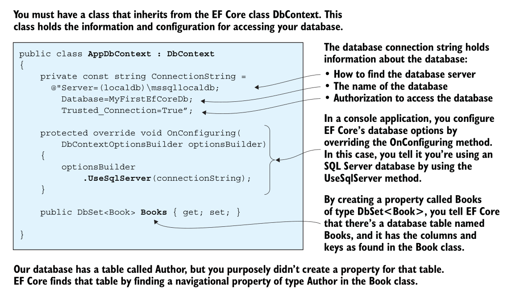
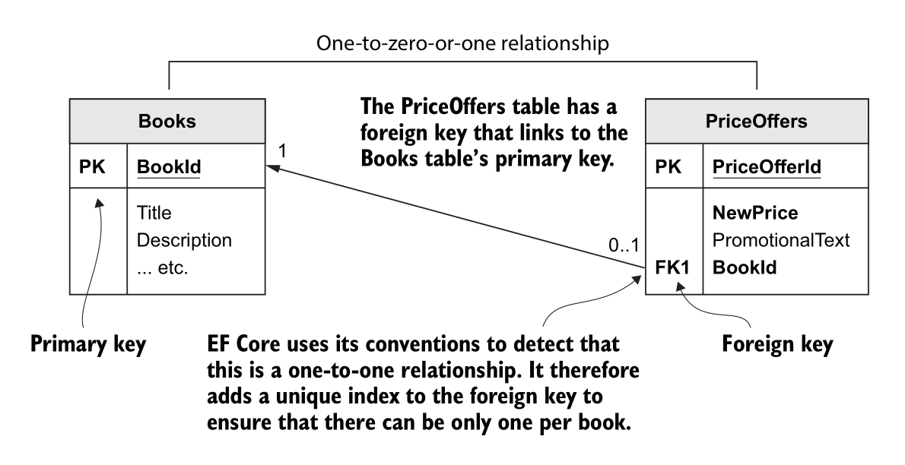
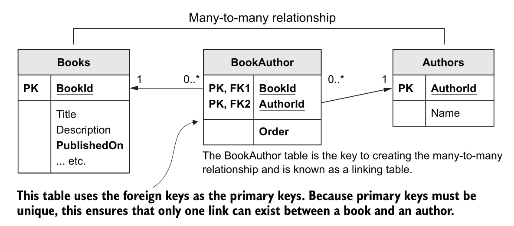

Entity Framework
Table of Contents
Introduction
Entity Framework Core, or EF Core, is a library that software developers can use to access databases. There are many ways to build such a library, but EF Core is designed as an object-relational mapper (O/RM). O/RMs work by mapping between two worlds: the relational database, with its own API, and the object-oriented soft- ware world of classes and software code. EF Core’s main strength is allowing software developers to write database access code quickly in a language that you may know better than SQL.
As they say, EF can be just an portal of OOP into databases, here is the EF Core mapping between a database and .NET software:
| Relational database | .NET Program |
|---|---|
| Table | .NET class |
| Table Columns | Class properties/fields |
| Rows | Elements in .NET collections, like List<T> for example |
| Primary keys: unique row | A unique class instance |
| Foreign Keys: define a relationship | Reference to another class |
SQL for instance, WHERE |
.NET LINQ for instance, Where (p => ) ... |
Where the Database Will Come From?
EF Core is about accessing databases, but where does that database come from? EF Core gives you two options: EF Core can create it for you, in what’s known as a code-first approach, or you can provide an existing database you built outside EF Core, in what’s known as a database-first approach.
For the first application I'm going to use the simple relational database:

Having created and set up a .NET console application, you can now start writing EF Core code. You need to write two fundamental parts before creating any database access code:
- The classes that you want EF Core to map to the tables in your database.
- The application’s DbContext.
EF Core maps classes to database tables. Therefore, you need to create a class that will define the database table or match a database table if you already have a database. Lots of rules and configurations exist.

The following are my implementation of those classes:
Author
using System.ComponentModel.DataAnnotations;
namespace Books;
public class Author
{
[Key] public int id { get; set; }
public string Name { get; set; }
public string Url { get; set; }
}
Book
using System.ComponentModel.DataAnnotations;
namespace Books;
public class Book
{
[Key]
public int Id { get; set; }
public string Title { get; set; }
public string Description { get; set; }
public DateTime PublishedOn { get; set; }
public Author AuthorId { get; set; }
}
The other important part of the application is DbContext, a class you create that inherits from EF Core’s DbContext class. This class holds the information EF Core needs to configure that database mapping and is also the class you use in your code to access the database:

using Microsoft.EntityFrameworkCore;
namespace Books;
public class AppContext : DbContext
{
public DbSet<Book> bookdp { get; set; }
public DbSet<Author> author { get; set; }
protected override void OnConfiguring(DbContextOptionsBuilder optionsBuilder)
{
const string v = "Server=localhost; Port=5432; Database=books; Username=postgres;";
optionsBuilder.UseNpgsql(v);
}
}
You can quickly check how your program affect your database:
namespace Books;
public static class Program
{
private static void Main()
{
var x = new AppContext();
Author kh = new Author()
{
Url = "WQW",
Name = "Khaled"
};
Book o = new Book
{
AuthorId = kh,
Title = "Book tt",
Description = "Sblanga",
PublishedOn = DateTime.UtcNow
};
x.Database.EnsureDeleted();
x.Database.EnsureCreated();
x.Add(o);
x.SaveChanges();
}
}
It should be obvious; if the database already exist, delete it please, then create it again
and add the new o object, and finally save the changes. Let's try to evaluate SELECT
from the database:
SELECT * FROM books;
| id | title | description | publishedon | author_id | |----+---------+-------------+----------------------------+-----------| | 1 | Book tt | Sblanga | 2022-03-09 20:55:11.541898 | 1 |
Querying The Database
Although we could have created a database with all the data about a book, its author(s), and its reviews in one table, that wouldn’t have worked well in a relational database, especially because the reviews are variable in length. The norm for relational data- bases is to split out any repeated data (such as the authors).
We could have arranged the various parts of the book data in the database in sev- eral ways, but for this example, the database has one of each of the main types of rela- tionships you can have in EF Core. These three types are
One-to-one relationship—PriceOffer to a Book
A book can have a promotional price applied to it with an optional row in the Price- Offer, which is an example of a one-to-one relationship. (Technically, the relationship is one-to-zero-or-one).

]]One-to-many relationship—Book with Reviews Books can be written by one or more authors, and an author may write one or more books. Therefore, you need a table called Books to hold the books data and another table called Authors to hold the authors. The link between the Books and Authors tables is called a many-to-many relationship, which in this case needs a linking table to achieve this relationship..

- Many-to-many relationship—Books linked to Authors and Books linked to Tags
The Classes the EF Core Maps to the Database
I’ve created five .NET classes to map to the six tables in the database. These classes are called Book, PriceOffer, Review, Tag, Author, and BookAuthor for the many-to-many- linking table, and they are referred to as entity classes to show that they’re mapped by EF Core to the database. From the software point of view, there’s nothing special about entity classes. They’re normal .NET classes, sometimes referred to as plain old CLR objects (POCOs). The term entity class identifies the class as one that EF Core has mapped to the database.
using System.ComponentModel.DataAnnotations;
namespace Books;
public class Book
{
[Key] public int Id { get; set; }
public string Title { get; set; }
public string Description { get; set; }
public DateTime PublishedOn { get; set; }
public Decimal Price { get; set; }
public string ImageUrl { get; set; }
// relationships
public ICollection<Review> Reviews { get; set; }
public ICollection<Tag> Tags { get; set; }
public Author AuthorId { get; set; }
}
Now you have to add those new relationships into your DBContext:
using Microsoft.EntityFrameworkCore;
namespace Books;
public class AppContext : DbContext
{
public DbSet<Book> Books { get; set; }
public DbSet<Author> Authors { get; set; }
public DbSet<Review> Reviews { get; set; }
public DbSet<Tag> Tags { get; set; }
protected override void OnConfiguring(DbContextOptionsBuilder optionsBuilder)
{
const string v = "Server=localhost; Port=5432; Database=books; Username=postgres;";
optionsBuilder.UseNpgsql(v);
}
}
Understanding Migrations
Entity Framework needs to be able to comprehend how to build
queries that work with your database schema, how to reshape data that's returned from the
database in order to create your objects from them, and also, as you modify the data, how to
get that data into the database. In order to do that, it has a comprehension about how the
data model you've defined through DbContext maps to the schema of the database. And it
performs that logic at runtime by reading the DbContext and using its own conventions,
combined with any additional custom mapping information that you've provided to it to infer
the schema of the database. And with that information, it's able to figure out how to do
those interactions, how to build queries, how to construct commands to push data to the
database, and how to transform database results into your objects.
That also means if you evolve your data model and that could be because you've made changes
to the structure of your classes or you've added more information to the DbContext, then
Entity Framework's comprehension of the database schema will also change. But that's just
what Entity Framework thinks is in the database. So it's important to make sure that what it
thinks the database looks like is actually what the database looks like. Along with the code
first paradigm with Entity Framework and Entity Framework Core, we also have a full set of
APIs referred to as migrations. With each change to your model, you can create a new
migration that describes the change and then let the Migrations API create the proper SQL
script. And if you'd like, the Migrations API can execute that script for you right on the
database.
Trying Migrate
It's time to create the first migration for the Samurai context. In order to create and execute migrations, we'll need access to the migrations commands and to the migrations logic. Not every developer working with the EF Core is going to create and execute migrations, so those are in separate packages. How you access the commands depends on if you're using Visual Studio or the command line. In Visual Studio, you can use the package manager console to executable commands. EF Core Migrations has a set of PowerShell commands, and you can just add those into each project using the NuGet package manager. But if you're working at the command line with the .NET CLI, you would instead use the EF Core Migrations command line tools.
That's not a NuGet package for your project, but a .NET tool that you install on your development machine and is then available for all your projects. The APIs are in a different package called Microsoft.EntityFrameworkCore.Design. If you're referencing the tools package, that has a dependency on the design package and will just pull it in for you. But if you're using the CLI and therefore you're not adding the tools package, you do need to explicitly reference the design package in your project. I've already added the tools package to the project so remember that gives me the PowerShell commands, and that has a dependency on the design package. So the design package, with all the actual logic and APIs, is also pulled into my project. You'll run the commands in the package manager console, which is for executing PowerShell commands.
The commands are Add‑Migration, Drop‑Database, Get‑DbContext, Get‑Migration, Remove‑Migration, Scaffold‑DbContext, Script‑DbContext, Script‑Migration, and Update‑Database. Add‑Migration and Update‑Database might be familiar to you if you've used EF Migrations in the past. Add‑Migration will look at the DbContext and determine the data model. Using that knowledge, it will create a new migration file with the information needed to create or migrate the database to match the model. Update‑Database applies the migration to the database. Since the task right now is to add a new migration, I won't delve further into the other commands, and we'll just focus on adding migration and updating the database.
Add‑Migration has a number of parameters, but I'm only going to use the required parameter, the name of the migration file I'm creating, and I'll call it init. Note that I'm able to use migrations from a class library because I'm targeting .NET 5. If the app were targeting .NET Core 3.1, and this project was specifically targeting .NET Standard, then it's a little trickier because .NET Standard isn't enough for executing migrations because it doesn't have the capability to execute anything. Check the EF Core documentation for details about how to use migrations from a .NET Standard class library, .NET Core 3.1. But thanks to .NET 5, creating this migration file was no problem at all.
Creating the migrations:
dotnet-ef migrations add <migration name here>
Updating to the last migrations:
dotnet-ef database update
With the migration in place, we now have everything we need in order to create a database. Not only do migrations give me the ability to have Entity Framework create the database for me directly, I can also have it generate a script, which is an important feature for working with a production database or sharing your development database changes with your team. With my development database, I'll typically let migrations go ahead and create and update the database for me on the fly. But with a production database, a more common scenario is to take advantage of the ability to generate the SQL and taking more control over how and when it's applied to the production database.
EF Core's script‑migration command will build up the relevant SQL:
dotnet -ef migrations script -o <filename.sql>
Reverse Engineering an Existing Database
You've seen me use migrations to create a database from a DbContext in classes. It's also possible to reverse engineer an existing database into a DbContext in classes. Typically, this is a one‑time procedure to get you a head start with your code if you're working within existing database. At some point, EF Core will support updating the model with database changes, but that's not possible with EF Core. Also, with the current version, it's not easy to begin by reverse engineering an existing database and then migrate the database with model changes.
The PowerShell command to use for this task is Scaffold‑DbContext. And if
you're using the EF CLI, it's dotnet ef dbcontext scaffold. The provider and connection
parameters are required though, which makes sense.
Let's give it a try:
dotnet-ef dbcontext scaffold "Server=localhost; Port=5432; Database=books; Username=postgres;" Npgsql.EntityFrameworkCore.PostgreSQL